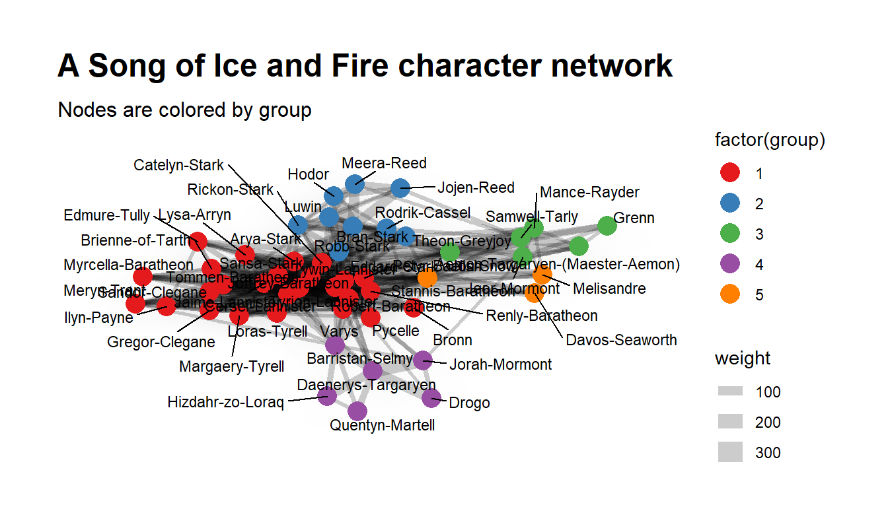
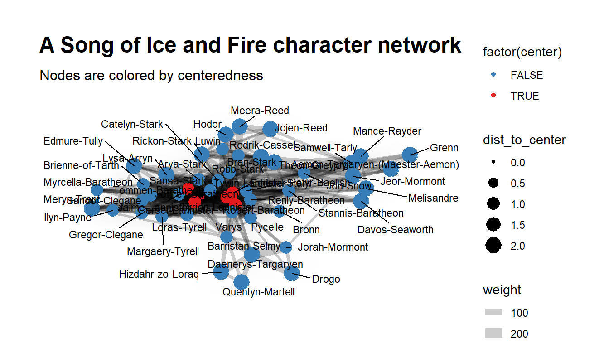

Chapter 18 Organisational network analysis
Visualizing and analysing formal and informal relationships in your organization can help you shape business strategy that maximizes organic exchange of information, thereby helping your business become more sustainable and effective.
For example in Organisational network analysis (ONA), we can ask employees three simple questions: 1) who is important to your ability to accomplish work priorities? 2) who is important for you to have greater access to, and 3) who provides you with career-related advice?
Nowadays, HR professionals use Organizational Network Analysis (ONA) use to their advantage. A whole new skill set is develping. HR professionals need to develop a structured way to visualise how communications, information, and decisions flow through an organization.
Organizational networks consist of nodes and edges.
In the following example, we will use the character interaction network for George R. R. Martin’s “A Song of Ice and Fire” saga.
These networks were created by connecting two characters whenever their names (or nicknames) appeared within 15 words of one another in one of the books in “A Song of Ice and Fire.” The edge weight corresponds to the number of interactions. A Song of Ice and Fire is an ongoing a series of epic fantasy novels.
You can use this data to explore the dynamics of the Seven Kingdoms using network science techniques. For example, community detection finds coherent plotlines. Centrality measures uncover the multiple ways in which characters play important roles in the saga.
This is the data for the work presented here: https://networkofthrones.wordpress.com by Andrew Beveridge.
Source: https://github.com/mathbeveridge/asoiaf Source code: https://shirinsplayground.netlify.com/2018/03/got_network/ Source code: https://shiring.github.io/networks/2017/05/15/got_final
With the following we ensure that all needed libraries are installed.
library(tidyverse) # tidy data analysis
library(tidygraph) # tidy graph analysis
library(ggraph) # for plotting
library(igraph) # for plotting
library(visNetwork) # for visualising graphFirst, let’s get the data from the characters from the “Song of Ice and Fire” novels.
Let us identify first the main characters contained either as Source or as a target and later the 50 most important charcters:
main_ch <- cooc_all_edges %>%
select(-Type) %>%
gather(x, name, Source:Target) %>%
group_by(name) %>%
summarise(sum_weight = sum(weight)) %>%
ungroup()
main_ch_l <- main_ch %>%
arrange(desc(sum_weight)) %>%
top_n(50, sum_weight)
main_ch_l# A tibble: 50 x 2
name sum_weight
<chr> <dbl>
1 Tyrion-Lannister 2873
2 Jon-Snow 2757
3 Cersei-Lannister 2232
4 Joffrey-Baratheon 1762
5 Eddard-Stark 1649
6 Daenerys-Targaryen 1608
7 Jaime-Lannister 1569
8 Sansa-Stark 1547
9 Bran-Stark 1508
10 Robert-Baratheon 1488
# ... with 40 more rowsIn the following we select the relationships of the top 50 characters. The edges are undirected, therefore there are no redundant Source-Target combinations; because of this, Source and Target data have been gathered before summing up the weights.
The first step is to convert our edge table into a tbl_graph object structure. Here, we use the as_tbl_graph() function from tidygraph; it can take many different types of input data, like data.frame, matrix, dendrogram, igraph, etc.
A central aspect of tidygraph is that you can directly manipulate node and edge data from this tbl_graph object by activating nodes or edges. When we first create a tbl_graph object, the nodes will be activated. We can then directly calculate node or edge metrics, like centrality, using tidyverse functions.
We can change that with the activate() function. We can now, for example, remove multiple edges.
# A tbl_graph: 50 nodes and 402 edges
#
# An undirected simple graph with 1 component
#
# Node Data: 50 x 1 (active)
name
<chr>
1 Aemon-Targaryen-(Maester-Aemon)
2 Arya-Stark
3 Barristan-Selmy
4 Bran-Stark
5 Brienne-of-Tarth
6 Bronn
# ... with 44 more rows
#
# Edge Data: 402 x 5
from to Type id weight
<int> <int> <chr> <dbl> <dbl>
1 1 15 Undirected 54 5
2 1 20 Undirected 57 25
3 1 23 Undirected 58 110
# ... with 399 more rows# A tbl_graph: 50 nodes and 402 edges
#
# An undirected simple graph with 1 component
#
# Edge Data: 402 x 5 (active)
from to Type id weight
<int> <int> <chr> <dbl> <dbl>
1 1 15 Undirected 54 5
2 1 20 Undirected 57 25
3 1 23 Undirected 58 110
4 1 28 Undirected 60 5
5 1 39 Undirected 63 5
6 1 41 Undirected 64 99
# ... with 396 more rows
#
# Node Data: 50 x 1
name
<chr>
1 Aemon-Targaryen-(Maester-Aemon)
2 Arya-Stark
3 Barristan-Selmy
# ... with 47 more rowsNode ranking
There are many options for node ranking (go to ?node_rank for a full list); let’s try out Minimize hamiltonian path length using a travelling salesperson solver.
as_tbl_graph(cooc_all_f, directed = FALSE) %>%
activate(nodes) %>%
mutate(n_rank_trv = node_rank_traveller()) %>%
arrange(n_rank_trv)# A tbl_graph: 50 nodes and 402 edges
#
# An undirected simple graph with 1 component
#
# Node Data: 50 x 2 (active)
name n_rank_trv
<chr> <int>
1 Myrcella-Baratheon 1
2 Cersei-Lannister 2
3 Tommen-Baratheon 3
4 Brienne-of-Tarth 4
5 Catelyn-Stark 5
6 Robb-Stark 6
# ... with 44 more rows
#
# Edge Data: 402 x 5
from to Type id weight
<int> <int> <chr> <dbl> <dbl>
1 26 27 Undirected 54 5
2 25 27 Undirected 57 25
3 24 27 Undirected 58 110
# ... with 399 more rowsCentrality
Centrality describes the number of edges that are in- or outgoing to/from nodes. High centrality networks have few nodes with many connections, low centrality networks have many nodes with similar numbers of edges. The centrality of a node measures the importance of it in the network.
#Centrality
as_tbl_graph(cooc_all_f, directed = FALSE) %>%
activate(nodes) %>%
mutate(neighbors = centrality_degree()) %>%
arrange(-neighbors)# A tbl_graph: 50 nodes and 402 edges
#
# An undirected simple graph with 1 component
#
# Node Data: 50 x 2 (active)
name neighbors
<chr> <dbl>
1 Tyrion-Lannister 36
2 Robert-Baratheon 33
3 Joffrey-Baratheon 32
4 Cersei-Lannister 30
5 Eddard-Stark 30
6 Jaime-Lannister 29
# ... with 44 more rows
#
# Edge Data: 402 x 5
from to Type id weight
<int> <int> <chr> <dbl> <dbl>
1 41 47 Undirected 54 5
2 38 41 Undirected 57 25
3 14 41 Undirected 58 110
# ... with 399 more rowsGrouping and clustering
Another common operation is to group nodes based on the graph topology, sometimes referred to as community detection based on its commonality in social network analysis. All clustering algorithms from igraph is available in tidygraph using the group_* prefix. All of these functions return an integer vector with nodes (or edges) sharing the same integer being grouped together. https://www.data-imaginist.com/2017/introducing-tidygraph/
We can use ?group_graph for an overview about all possible ways to cluster and group nodes. Here I am using group_infomap(): Group nodes by minimizing description length using.
#Grouping and clustering
as_tbl_graph(cooc_all_f, directed = FALSE) %>%
activate(nodes) %>%
mutate(group = group_infomap()) %>%
arrange(-group)# A tbl_graph: 50 nodes and 402 edges
#
# An undirected simple graph with 1 component
#
# Node Data: 50 x 2 (active)
name group
<chr> <int>
1 Davos-Seaworth 5
2 Melisandre 5
3 Stannis-Baratheon 5
4 Barristan-Selmy 4
5 Daenerys-Targaryen 4
6 Drogo 4
# ... with 44 more rows
#
# Edge Data: 402 x 5
from to Type id weight
<int> <int> <chr> <dbl> <dbl>
1 10 11 Undirected 54 5
2 10 12 Undirected 57 25
3 10 13 Undirected 58 110
# ... with 399 more rowsQuerying node types
We can also query different node types (?node_types gives us a list of options):
These functions all lets the user query whether each node is of a certain type. All of the functions returns a logical vector indicating whether the node is of the type in question. Do note that the types are not mutually exclusive and that nodes can thus be of multiple types.
Here, I am trying out node_is_center() (does the node have the minimal eccentricity in the graph) and node_is_keyplayer() to identify the top 10 key-players in the network.
#Querying node types
as_tbl_graph(cooc_all_f, directed = FALSE) %>%
activate(nodes) %>%
mutate(center = node_is_center(),
keyplayer = node_is_keyplayer(k = 10))# A tbl_graph: 50 nodes and 402 edges
#
# An undirected simple graph with 1 component
#
# Node Data: 50 x 3 (active)
name center keyplayer
<chr> <lgl> <lgl>
1 Aemon-Targaryen-(Maester-Aemon) FALSE TRUE
2 Arya-Stark FALSE FALSE
3 Barristan-Selmy FALSE FALSE
4 Bran-Stark FALSE TRUE
5 Brienne-of-Tarth FALSE TRUE
6 Bronn FALSE FALSE
# ... with 44 more rows
#
# Edge Data: 402 x 5
from to Type id weight
<int> <int> <chr> <dbl> <dbl>
1 1 15 Undirected 54 5
2 1 20 Undirected 57 25
3 1 23 Undirected 58 110
# ... with 399 more rowsNode pairs
Some statistics are a measure between two nodes, such as distance or similarity between nodes. In a tidy context one of the ends must always be the node defined by the row, while the other can be any other node. All of the node pair functions are prefixed with node_* and ends with _from/_to if the measure is not symmetric and _with if it is; e.g. there’s both a node_max_flow_to() and node_max_flow_from() function while only a single node_cocitation_with() function. The other part of the node pair can be specified as an integer vector that will get recycled if needed, or a logical vector which will get recycled and converted to indexes with which(). This means that output from node type functions can be used directly in the calls. https://www.data-imaginist.com/2017/introducing-tidygraph/
#Node pairs
as_tbl_graph(cooc_all_f, directed = FALSE) %>%
activate(nodes) %>%
mutate(dist_to_center = node_distance_to(node_is_center()))# A tbl_graph: 50 nodes and 402 edges
#
# An undirected simple graph with 1 component
#
# Node Data: 50 x 2 (active)
name dist_to_center
<chr> <dbl>
1 Aemon-Targaryen-(Maester-Aemon) 2
2 Arya-Stark 1
3 Barristan-Selmy 1
4 Bran-Stark 1
5 Brienne-of-Tarth 1
6 Bronn 1
# ... with 44 more rows
#
# Edge Data: 402 x 5
from to Type id weight
<int> <int> <chr> <dbl> <dbl>
1 1 15 Undirected 54 5
2 1 20 Undirected 57 25
3 1 23 Undirected 58 110
# ... with 399 more rowsEdge betweenness
Similarly to node metrics, we can calculate all kinds of edge metrics. Betweenness, for example, describes the shortest paths between nodes.
#Edge betweenness
as_tbl_graph(cooc_all_f, directed = FALSE) %>%
activate(edges) %>%
mutate(centrality_e = centrality_edge_betweenness())# A tbl_graph: 50 nodes and 402 edges
#
# An undirected simple graph with 1 component
#
# Edge Data: 402 x 6 (active)
from to Type id weight centrality_e
<int> <int> <chr> <dbl> <dbl> <dbl>
1 1 15 Undirected 54 5 46
2 1 20 Undirected 57 25 0
3 1 23 Undirected 58 110 0
4 1 28 Undirected 60 5 25.5
5 1 39 Undirected 63 5 67.5
6 1 41 Undirected 64 99 0
# ... with 396 more rows
#
# Node Data: 50 x 1
name
<chr>
1 Aemon-Targaryen-(Maester-Aemon)
2 Arya-Stark
3 Barristan-Selmy
# ... with 47 more rows#The complete code
cooc_all_f_graph <- as_tbl_graph(cooc_all_f, directed = FALSE) %>%
mutate(n_rank_trv = node_rank_traveller(),
neighbors = centrality_degree(),
group = group_infomap(),
center = node_is_center(),
dist_to_center = node_distance_to(node_is_center()),
keyplayer = node_is_keyplayer(k = 10)) %>%
activate(edges) %>%
filter(!edge_is_multiple()) %>%
mutate(centrality_e = centrality_edge_betweenness())
cooc_all_f_graph %>%
activate(nodes) %>% # %N>%
as_tibble()# A tibble: 50 x 7
name n_rank_trv neighbors group center dist_to_center keyplayer
<chr> <int> <dbl> <int> <lgl> <dbl> <lgl>
1 Aemon-Targaryen-(~ 13 7 3 FALSE 2 TRUE
2 Arya-Stark 25 24 1 FALSE 1 TRUE
3 Barristan-Selmy 41 17 4 FALSE 1 FALSE
4 Bran-Stark 20 22 2 FALSE 1 FALSE
5 Brienne-of-Tarth 5 16 1 FALSE 1 FALSE
6 Bronn 34 10 1 FALSE 1 FALSE
7 Catelyn-Stark 38 26 1 FALSE 1 FALSE
8 Cersei-Lannister 8 30 1 TRUE 1 FALSE
9 Daenerys-Targaryen 44 10 4 FALSE 2 FALSE
10 Davos-Seaworth 31 6 5 FALSE 2 TRUE
# ... with 40 more rows# A tibble: 402 x 6
from to Type id weight centrality_e
<int> <int> <chr> <dbl> <dbl> <dbl>
1 1 15 Undirected 54 5 46
2 1 20 Undirected 57 25 0
3 1 23 Undirected 58 110 0
4 1 28 Undirected 60 5 25.5
5 1 39 Undirected 63 5 67.5
6 1 41 Undirected 64 99 0
7 1 44 Undirected 65 12 0
8 2 4 Undirected 299 40 0
9 2 7 Undirected 303 8 6.5
10 2 8 Undirected 304 25 0
# ... with 392 more rowsPlotting with the package “ggraph”
First, I am going to define a layout. There are lots of options for layouts, here I am using a Fruchterman-Reingold algorithm.
The rest works like any ggplot2 function call, just that we use special geoms for our network, like geom_edge_density() to draw a shadow where the edge density is higher, geom_edge_link() to connect edges with a straight line, geom_node_point() to draw node points and geom_node_text() to draw the labels.
ggraph(layout) +
geom_edge_density(aes(fill = weight)) +
geom_edge_link(aes(width = weight), alpha = 0.2) +
geom_node_point(aes(color = factor(group)), size = 5) +
geom_node_text(aes(label = name), size = 3, repel = TRUE) +
scale_color_brewer(palette = "Set1") +
theme_graph(base_family="sans") +
labs(title = "A Song of Ice and Fire character network",
subtitle = "Nodes are colored by group")
ggsave("plotshiringroup.pdf", width = 21, height = 29.7, units = "cm")
cols <- RColorBrewer::brewer.pal(3, "Set1")
ggraph(layout) +
geom_edge_density(aes(fill = weight)) +
geom_edge_link(aes(width = weight), alpha = 0.2) +
geom_node_point(aes(color = factor(center), size = dist_to_center)) +
geom_node_text(aes(label = name), size = 3, repel = TRUE) +
scale_colour_manual(values = c(cols[2], cols[1])) +
theme_graph(base_family="sans") +
labs(title = "A Song of Ice and Fire character network",
subtitle = "Nodes are colored by centeredness")
Another visualisation, this time with the package “visNetwork”
Graph-based analyses are many and diverse: whenever you can describe your data in terms of “outgoing” and “receiving” entities, a graph-based analysis and/or visualisation is possible. Let us try visualising previous results with another package called “visNetwork”.
visNetwork is an R package for network visualization, using vis.js javascript library. Being based on htmlwidgets, it is compatible with shiny, R Markdown documents, and RStudio viewer. It is particularly easy to use, one can customise shapes, styles, colors, size. It works smoothly on any modern browser for up to a few thousand nodes and edges.
nodes2 <- data.frame(id = (unique(c(cooc_all_f$Source, cooc_all_f$Target))), group = layout$group)
edges2 <- data.frame(from = cooc_all_f$Source,
to = (cooc_all_f$Target))
visNetwork(nodes2, edges2, height = "1000px", width = "100%") %>%
visLayout(randomSeed = 12) %>% # to have always the same network
visGroups(groupname = "1", color = "red") %>%
visGroups(groupname = "2", color = "blue") %>%
visGroups(groupname = "3", color = "green") %>%
visGroups(groupname = "4", color = "purple") %>%
visGroups(groupname = "5", color = "orange") %>%
visIgraphLayout() %>%
visOptions(highlightNearest = TRUE) %>%
visNodes(size = 15)visNetwork(nodes2, edges2, height = "1000px", width = "100%") %>%
visLayout(randomSeed = 12) %>% # to have always the same network
visGroups(groupname = "1", color = "red") %>%
visGroups(groupname = "2", color = "blue") %>%
visGroups(groupname = "3", color = "green") %>%
visGroups(groupname = "4", color = "purple") %>%
visGroups(groupname = "5", color = "orange") %>%
visIgraphLayout() %>%
visOptions(highlightNearest = TRUE) %>%
visNodes(size = 15) %>%
visEdges(arrows = "to", arrowStrikethrough = F) %>%
visSave(file = "transfers2.html", selfcontained = T)